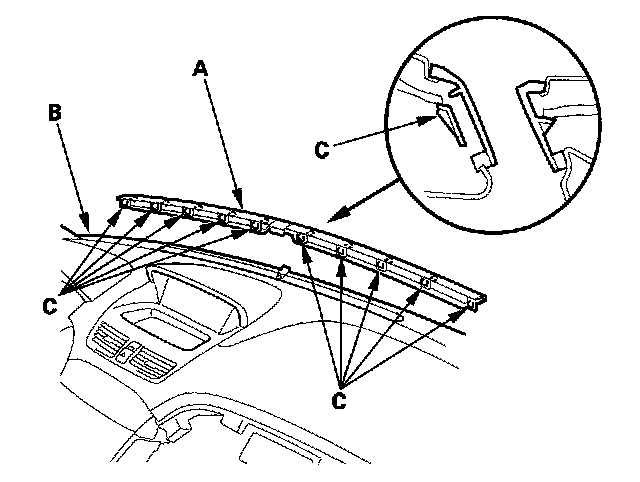

Front Defogger Vent Trim
Front Defogger Vent Trim Removal/InstallationSpecial Tools Required
KTC trim tool set SOJATP2014 *
* Available through the American Honda Tool and Equipment Program
NOTE:
- Take care not to scratch the dashboard and its related parts.
- Use the appropriate tool from the KTC trim tool set to avoid damage when removing components.
1. Remove the sunlight sensor.

2. Insert the trim tool into a gap between the front defogger vent trim (A) and the dashboard (B), and release all of the hooks (C).
3. Install the front defogger vent trim in the reverse order of removal, and push the hooks into place securely.